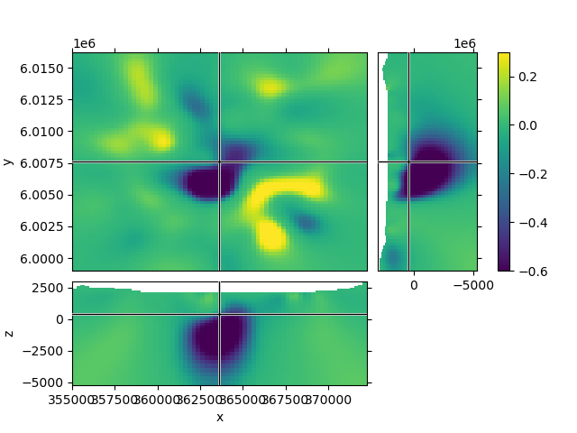
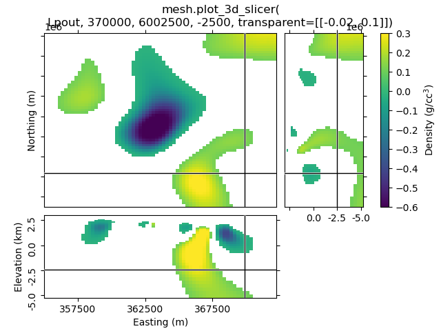
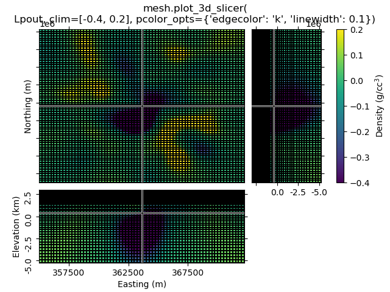
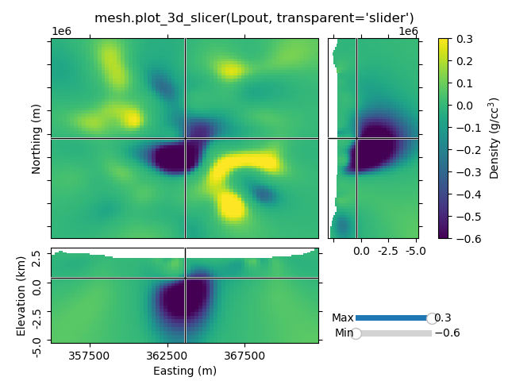

Note
Go to the end to download the full example code.
Slicer demo#
The example demonstrates the plot_3d_slicer
contributed by @prisae
Using the inversion result from the example notebook plot_laguna_del_maule_inversion.ipynb
You have to use %matplotlib notebook in Jupyter Notebook, and
%matplotlib widget in Jupyter Lab (latter requires the package
ipympl).
# %matplotlib notebook
# %matplotlib widget
import discretize
import numpy as np
import matplotlib.pyplot as plt
from matplotlib.colors import SymLogNorm
import pooch
Download and load data#
In the following we load the mesh and Lpout that you would
get from running the laguna-del-maule inversion notebook.
model_url = "https://storage.googleapis.com/simpeg/laguna_del_maule_slicer.tar.gz"
downloaded_items = pooch.retrieve(
model_url,
known_hash="107293bfdeb77b314f4cb451a24c2c93a55aae40da28f43cf3c075d71acfb957",
processor=pooch.Untar(),
)
mesh_path = next(filter(lambda f: f.endswith("mesh.json"), downloaded_items))
model_path = next(filter(lambda f: f.endswith("Lpout.npy"), downloaded_items))
# Load the mesh and model
mesh = discretize.load_mesh(mesh_path)
Lpout = np.load(model_path)
Case 1: Using the intrinsinc functionality#
1.1 Default options#
1.2 Create a function to improve plots, labeling after creation#
Depending on your data the default option might look a bit odd. The look of the figure can be improved by getting its handle and adjust it.
def beautify(title, fig=None):
"""Beautify the 3D Slicer result."""
# Get figure handle if not provided
if fig is None:
fig = plt.gcf()
# Get principal figure axes
axs = fig.get_children()
# Set figure title
fig.suptitle(title, y=0.95, va="center")
# Adjust the y-labels on the first subplot (XY)
plt.setp(axs[1].yaxis.get_majorticklabels(), rotation=90)
for label in axs[1].yaxis.get_ticklabels():
label.set_visible(False)
for label in axs[1].yaxis.get_ticklabels()[::3]:
label.set_visible(True)
axs[1].set_ylabel("Northing (m)")
# Adjust x- and y-labels on the second subplot (XZ)
axs[2].set_xticks([357500, 362500, 367500])
axs[2].set_xlabel("Easting (m)")
plt.setp(axs[2].yaxis.get_majorticklabels(), rotation=90)
axs[2].set_yticks([2500, 0, -2500, -5000])
axs[2].set_yticklabels(["$2.5$", "0.0", "-2.5", "-5.0"])
axs[2].set_ylabel("Elevation (km)")
# Adjust x-labels on the third subplot (ZY)
axs[3].set_xticks([2500, 0, -2500, -5000])
axs[3].set_xticklabels(["", "0.0", "-2.5", "-5.0"])
# Adjust colorbar
axs[4].set_ylabel("Density (g/cc$^3$)")
# Ensure sufficient margins so nothing is clipped
plt.subplots_adjust(bottom=0.1, top=0.9, left=0.1, right=0.9)
1.3 Set xslice, yslice, and zslice; transparent region#
The 2nd-4th input arguments are the initial x-, y-, and z-slice location (they default to the middle of the volume). The transparency-parameter can be used to define transparent regions.
1.4 Set clim, use pcolor_opts to show grid lines#
1.5 Use pcolor_opts to set SymLogNorm, and another cmap#
mesh.plot_3d_slicer(
Lpout, pcolor_opts={"norm": SymLogNorm(linthresh=0.01), "cmap": "RdBu_r"}
)
beautify(
"mesh.plot_3d_slicer(Lpout,"
"\npcolor_opts={'norm': SymLogNorm(linthresh=0.01),'cmap': 'RdBu_r'})`"
)
plt.show()
1.6 Use aspect and grid#
By default, aspect='auto' and grid=[2, 2, 1]. This means that
the figure is on a 3x3 grid, where the xy-slice occupies 2x2 cells of the
subplot-grid, xz-slice 2x1, and the zy-silce 1x2. So the
grid=[x, y, z]-parameter takes the number of cells for x, y, and
z-dimension.
grid can be used to improve the probable weired subplot-arrangement
if aspect is anything else than auto. However, if you zoom
then it won’t help. Expect the unexpected.
1.7 Transparency-slider#
Setting the transparent-parameter to ‘slider’ will create interactive sliders to change which range of values of the data is visible.
Case 2: Just using the Slicer class#
This way you get the figure-handle, and can do further stuff with the figure.
# You have to initialize a figure
fig = plt.figure()
# Then you have to get the tracker from the Slicer
tracker = discretize.mixins.Slicer(mesh, Lpout)
# Finally you have to connect the tracker to the figure
fig.canvas.mpl_connect("scroll_event", tracker.onscroll)
# Run it through beautify
beautify("'discretize.mixins.Slicer' together with\n'fig.canvas.mpl_connect'", fig)
plt.show()
Total running time of the script: (0 minutes 1.812 seconds)